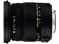

器材库 > APS画幅镜头 > DC EX 17-50/2.8 OS HSM

详细规格
镜头类型
标准变焦镜头
发布日期
2010-02-22
焦距
17mm-50mm
等效35mm画幅焦距
25.5mm-75mm
最大光圈
f/2.8
最小光圈
f/22
视角（对角）
72.4-27.9
镜头结构
17片/13组
光圈叶片
7片
最近对焦距离
28cm
最大放大倍率
0.2倍
驱动马达
HSM（超声波马达）
滤镜口径
77mm
镜头卡口
Canon EF, Minolta/Konica-Minolta/Sony AF, Nikon AF, Pentax AF, Sigma SA
防抖
是
颜色
黑色
尺寸
83.5×91.8mm
重量
565g
附件
镜头袋, 遮光罩
古斯塔夫元帅2017-06-22 11:204.75 分
操作性 5.00耐用性 4.50性价比 5.00解像力 5.00色彩还原 4.50机械结构 4.50
seamen882014-11-18 10:424.42 分
操作性 4.50耐用性 4.00性价比 5.00解像力 4.50色彩还原 4.00机械结构 4.50
darevil2014-07-19 16:484.83 分
操作性 5.00耐用性 4.50性价比 5.00解像力 5.00色彩还原 5.00机械结构 4.50
jerysys2014-06-02 22:334.58 分
操作性 4.50耐用性 4.50性价比 5.00解像力 4.50色彩还原 5.00机械结构 4.00
will212014-04-15 10:254.92 分
操作性 4.50耐用性 5.00性价比 5.00解像力 5.00色彩还原 5.00机械结构 5.00
良子学摄影2014-03-16 10:004.92 分
操作性 5.00耐用性 4.50性价比 5.00解像力 5.00色彩还原 5.00机械结构 5.00
老襄阳摄影师2014-01-26 22:034.25 分
操作性 4.50耐用性 4.50性价比 4.50解像力 3.50色彩还原 4.00机械结构 4.50
流浪的川猫2013-10-10 22:024.5 分
操作性 4.50耐用性 4.50性价比 4.50解像力 5.00色彩还原 4.50机械结构 4.00
tkartist2013-03-11 15:384.5 分
操作性 5.00耐用性 4.00性价比 5.00解像力 4.50色彩还原 4.50机械结构 4.00
myydy2012-07-12 13:034.75 分
操作性 5.00耐用性 5.00性价比 4.50解像力 4.50色彩还原 4.50机械结构 5.00
renjgoogle2012-06-21 16:464.58 分
操作性 4.00耐用性 4.00性价比 5.00解像力 5.00色彩还原 5.00机械结构 4.50
pig02072012-06-01 13:484.33 分
操作性 4.00耐用性 4.50性价比 4.00解像力 4.50色彩还原 4.50机械结构 4.50
产品图 / 样片
适马 DC EX 17-50/2.8 OS HSM
评测 / 相关文章
- 适马新镜17-50/2.8试用报告 （存档）
- ［资讯］适马推出索尼和宾得卡口17-50/2.8镜头 （存档）
- ［资讯］适马SA口17-50mm F2.8 OS头将发售 （存档）
- ［行情］适马新17-50mm镜头索尼口本周发售 （存档）
- ［资讯］适马新款17-50mm F2.8 海外样张赏析 （存档）
- ［资讯］适马新17-50mm f2.8欧洲售价公布 （存档）
- ［行情］适马17-50/2.8 6月发售 （存档）